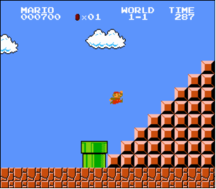

Mario
World 1-1
Toward the end of World 1-1 in Nintendo’s Super Mario Brothers, Mario must ascend right-aligned pyramid of blocks, a la the below.

Let’s recreate that pyramid in C, albeit in text, using hashes (#) for bricks, a la the below. Each hash is a bit taller than it is wide, so the pyramid itself is also be taller than it is wide.
#
##
###
####
#####
######
#######
########
The program we’ll write will be called mario. And let’s allow the user to decide just how tall the pyramid should be by first prompting them for a positive integer between, say, 1 and 8, inclusive.
Here’s how the program might work if the user inputs 8 when prompted:
$ ./mario
Height: 8
#
##
###
####
#####
######
#######
########
Here’s how the program might work if the user inputs 4 when prompted:
$ ./mario
Height: 4
#
##
###
####
Here’s how the program might work if the user inputs 2 when prompted:
$ ./mario
Height: 2
#
##
And here’s how the program might work if the user inputs 1 when prompted:
$ ./mario
Height: 1
#
If the user doesn’t, in fact, input a positive integer between 1 and 8, inclusive, when prompted, the program should re-prompt the user until they cooperate:
$ ./mario
Height: -1
Height: 0
Height: 42
Height: 50
Height: 4
#
##
###
####
How to begin? Let’s approach this problem one step at a time.
Pseudocode
First, create a new directory (i.e., folder) called mario inside of your pset1 directory, by executing
~/ $ mkdir ~/pset1/mario
Add a new file called pseudocode.txt inside of your mario directory.
Write in pseudocode.txt some pseudocode that implements this program, even if not (yet!) sure how to write it in code. There’s no one right way to write pseudocode, but short English sentences suffice. Recall how we wrote pseudocode for finding Mike Smith. Odds are your pseudocode will use (or imply using!) one or more functions, conditions, Boolean expressions, loops, and/or variables.
Spoiler
There’s more than one way to do this, so here’s just one!
- Prompt user for height
- If height is less than 1 or greater than 8 (or not an integer at all), go back one step
- Iterate from 1 through height:
- On iteration i, print i hashes and then a newline
It’s okay to edit your own after seeing this pseudocode here, but don’t simply copy/paste ours into your own!
Prompting for Input
Whatever your pseudocode, let’s first write only the C code that prompts (and re-prompts, as needed) the user for input. Create a new file called mario.c inside of your mario directory.
Now, modify mario.c in such a way that it prompts the user for the pyramid’s height, storing their input in a variable, re-prompting the user again and again as needed if their input is not a positive integer between 1 and 8, inclusive. Then, simply print the value of that variable, thereby confirming (for yourself) that you’ve indeed stored the user’s input successfully, a la the below.
$ ./mario
Height: -1
Height: 0
Height: 42
Height: 50
Height: 4
Stored: 4
Hints
- Recall that you can compile your program with
make. - Recall that you can print an
intwithprintfusing%i. - Recall that you can get an integer from the user with
get_int. - Recall that
get_intis declared incs50.h. - Recall that we prompted the user for a positive integer in class via
positive.c.
Building the Opposite
Now that your program is (hopefully!) accepting input as prescribed, it’s time for another step.
It turns out it’s a bit easier to build a left-aligned pyramid than right-, a la the below.
#
##
###
####
#####
######
#######
########
So let’s build a left-aligned pyramid first and then, once that’s working, right-align it instead!
Modify mario.c at right such that it no longer simply prints the user’s input but instead prints a left-aligned pyramid of that height.
Hints
- Keep in mind that a hash is just a character like any other, so you can print it with
printf. - Just as Scratch has a Repeat block, so does C have a
forloop, via which you can iterate some number times. Perhaps on each iteration, i, you could print that many hashes? -
You can actually “nest” loops, iterating with one variable (e.g.,
i) in the “outer” loop and another (e.g.,j) in the “inner” loop. For instance, here’s how you might print a square of height and widthn, below. Of course, it’s not a square that you want to print!for (int i = 0; i < n; i++) { for (int j = 0; j < n; j++) { printf("#"); } printf("\n"); }
Right-Aligning with Dots
Let’s now right-align that pyramid by pushing its hashes to the right by prefixing them with dots (i.e., periods), a la the below.
.......#
......##
.....###
....####
...#####
..######
.#######
########
Modify mario.c in such a way that it does exactly that!
Hint
Notice how the number of dots needed on each line is the “opposite” of the number of that line’s hashes. For a pyramid of height 8, like the above, the first line has but 1 hash and thus 7 dots. The bottom line, meanwhile, has 8 hashes and thus 0 dots. Via what formula (or arithmetic, really) could you print that many dots?
How to Test Your Code
Does your code work as prescribed when you input
-1(or other negative numbers)?0?1through8?9or other positive numbers?- letters or words?
- no input at all, when you only hit Enter?
Removing the Dots
All that remains now is a finishing flourish! Modify mario.c in such a way that it prints spaces instead of those dots!
How to Test Your Code
Execute the below to evaluate the correctness of your code using check50. But be sure to compile and test it yourself as well!
check50 cs50/problems/2021/x/mario/less
Execute the below to evaluate the style of your code using style50.
style50 mario.c
Hint
A space is just a press of your space bar, just as a period is just a press of its key! Just remember that printf requires that you surround both with double quotes!
How to Submit
Execute the below, logging in with your GitHub username and password when prompted. For security, you’ll see asterisks (*) instead of the actual characters in your password.
submit50 cs50/problems/2021/x/mario/less